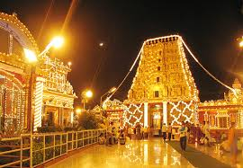
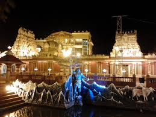
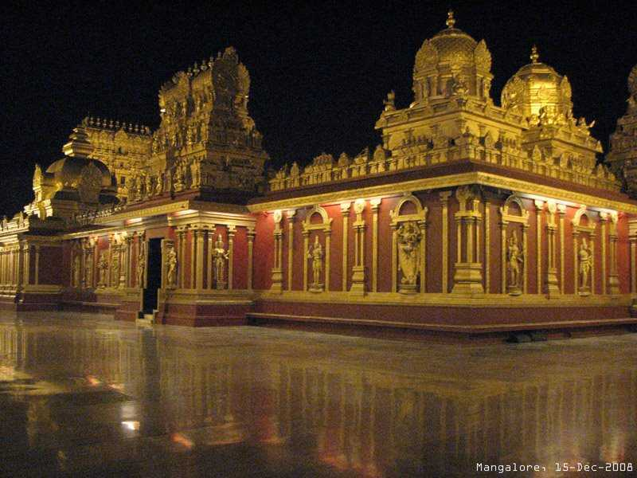
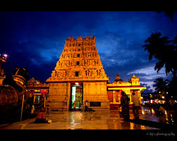

ABOUT TEMPLE
The Gokarnanatheshwara Temple, also known as Kudroli Sri Gokarnanatha
Kshetra, is located in the Kudroli area of Mangalore, Karnataka,
India. This temple holds significant religious, cultural, and
historical importance, especially for the Billava community.
Consecrated by Shri Narayana Guru and built in 1912 by Adhyaksha
HoigeBazar Koragappa, the temple is dedicated to Gokarnanatha, a form
of Lord Shiva. It is recognized as "Aadi" by the Billava community,
who are indigenous to the Western Ghats and the Western Coast of
Karnataka.
The Billavas have a rich history linked to the ancient Chera Empire,
which existed around 200 BCE to 1100 CE. The Chera kings, known as
Villavar (Billava), united various clans to form the early Chera
Empire along the western coast and Western Ghats of South India. The
early Cheras were centered around Muziris, identified as the region
around Mangalore. The kingdom's emblem featured a bow and arrow
(Billu/Villu and Bana), and silver punch-marked coins with this symbol
have been discovered, linking them to the term Billavas. The influence
of other sects, such as the Nagas and Jains, brought about cultural
changes like Naga worship and the construction of Jain monasteries.
The rise of other empires, such as the Pandyas and Cholas, led to the
gradual decline of the Chera Empire starting in the 5th century CE.
The temple is situated 2 km from the center of Mangalore city. It
features a Gopuram (tower-like structure) adorned with murals
depicting various gods, goddesses, and scenes from Hindu epics and
legends. These artistic elements illustrate the rich mythological and
cultural heritage associated with Hinduism. In 1908, Adhyaksha
Koragappa, a prominent Billava leader and businessman, led a
delegation of Billava elders to invite Shri Narayana Guru to guide
them in building a temple. Koragappa, a great devotee of Shri Narayana
Guru and Bhagawan Nityananda of Ganeshpuri, owned a large tile factory
and engaged in extensive trade with the Middle East, Africa,
Singapore, Malaysia, Sri Lanka, and Myanmar. Upon Shri Narayana Guru's
arrival in Mangalore, Koragappa provided him with a horse-drawn
carriage to select a suitable location for the temple. Narayana Guru
chose Kudroli after considering Mulihithilu, where a lot of Linga
Roopa Aradhana (worship of the linga form of Shiva) used to happen,
especially by saints of the NATH tradition. The Koragappa family still
preserves the chair on which Shri Narayana Guru sat in Adhyaksha
Koragappa's house to address various issues, including the creation of
the temple. Adhyaksha Koragappa then donated the necessary land and
funds to build the temple in 1912, seeking the blessings and spiritual
guidance of Shri Narayana Guru, who himself brought the Shiva linga
for the temple. The Gokarnanatheshwara Temple stands as a testament to
the spiritual aspirations and cultural heritage of the Billava
community. It continues to be a vibrant center of worship and a symbol
of the enduring legacy of Shri Narayana Guru and Adhyaksha Koragappa.
History Of The Temple
The Billavas are the indigenous people of the Western Ghats and the Western Coast of Karnataka. The first known empire of the Billavas was the Chera Empire, which existed around 200 BCE. The Chera kings of the Chera dynasty (200 BCE - 1100 CE) bore the title of Villavar (Billava). Several Villavar/Billava clans united to form the early Chera Empire along the western coast and Western Ghats of South India. The early Cheras were centered around Muziris, identified as the region around Mangalore in southwestern Karnataka. The Chera Kingdom's emblem featured a bow and arrow (Billu/Villu and Bana) on their flags, and silver punch-marked coins with the bow symbol have been discovered, linking them to the term Billavas. The influence of other sects, such as the Nagas and Jains, brought about cultural changes like Naga worship and the construction of Jain monasteries. The rise of other empires, such as the Pandyas and Cholas, led to the gradual decline of the Chera Empire starting in the 5th century CE. The Chera Empire is briefly mentioned by Kautilya (Chanakya) (3rd-4th century BCE), Katyayana (3rd-4th century BCE), and Patanjali (5th century BCE), among others. The Billava community sought to establish a unique spiritual presence, desiring to offer personalized worship to their deity, Lord Shiva, in accordance with Billava traditions. In this context, Adhyaksha Koragappa, a Billava leader and businessman, took the initiative to find a spiritual guide for this quest. In 1908, Adhyaksha Koragappa led a delegation of Billava elders to invite Shri Narayana Guru to guide them in building a temple. Adhyaksha Koragappa, a great devotee of Shri Narayana Guru and Bhagawan Nityananda of Ganeshpuri, was a prominent businessman in Mangalore. He owned a large tile factory and engaged in extensive trade with the Middle East, Africa, Singapore, Malaysia, Sri Lanka, and Myanmar, dealing in Mangalore tiles, copra, spices, and other natural products. Upon Shri Narayana Guru's arrival in Mangalore, Adhyaksha Koragappa provided him with a horse-drawn carriage to select a suitable location for the temple. After considering Mulihithilu and Kudroli, Narayana Guru chose Kudroli. The Koragappa family still preserves the chair on which Shri Narayana Guru sat in Adhyaksha Koragappa's house to address various issues, including the creation of the temple. Adhyaksha Koragappa then donated the necessary land and funds to build the temple in 1912, seeking the blessings and spiritual guidance of Shri Narayana Guru, who himself brought the Shiva linga for the temple.
IMAGES
   